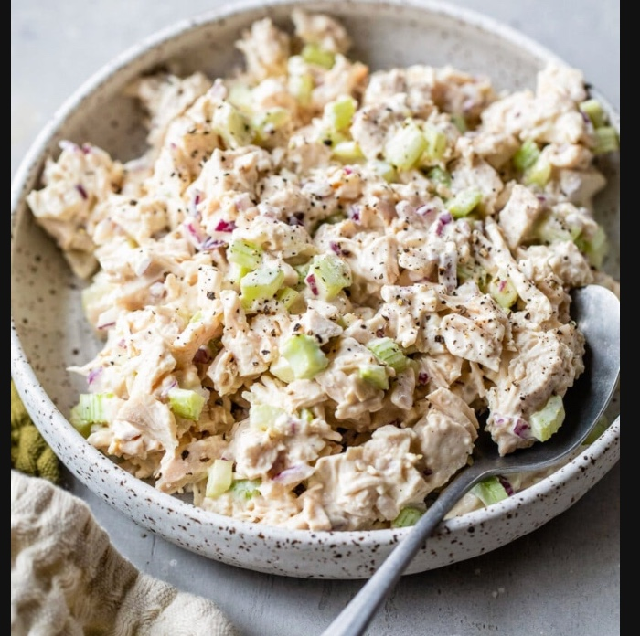

Ingredientes (4 raciones)
Instrucciones
- Cocina las pechugas de pollo hasta que estén bien hechas y déjalas enfriar. Desmenúzalas o córtalas
en cubitos.
- En un bol grande mezcla la mayonesa, la mostaza, el jugo de limón, sal y pimienta.
- Añade el pollo, el apio y la cebolla. Mezcla bien hasta que todo quede integrado.
- Incorpora, si quieres, las nueces, uvas o manzana para una versión más completa.
- Refrigera al menos 30 minutos antes de servir: mejora mucho el sabor en frío.
Cómo servirla
- En pan de molde o brioche, como sándwich de chicken salad.
- Sobre una cama de lechuga fresca.
- Con crackers o tostadas, como dip.